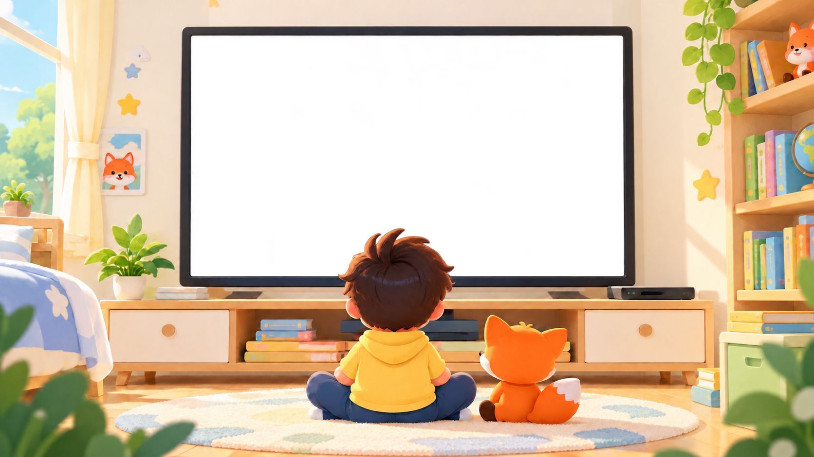
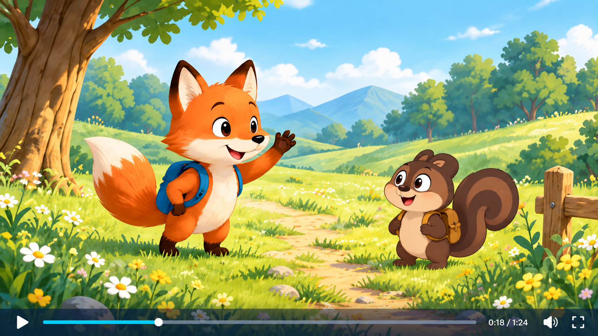
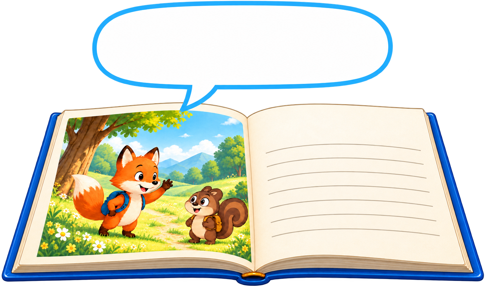
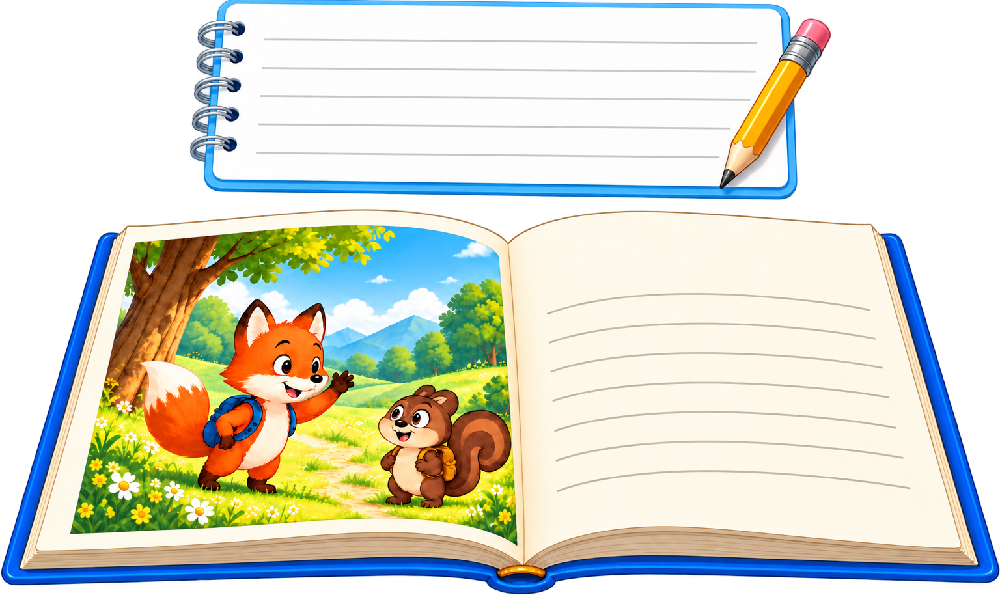

는
애니메이션 영어 영상과
동화 책(eBook, Printable Book)을
마음껏 보고 읽을 수 있는
입니다.
매월 진행되는 CLASS 를 통해
듣기, 읽기 뿐만 아니라
말하기, 쓰기 실력까지 키울 수 있습니다.

듣고 읽는 즐거움에서, 말하고 쓰는 자신감까지.



Hi, how are you.
차고 넘치도록 영어 영상을 들어야(Listening) 하고, 영어 책도 읽어야(Reading) 합니다. 상대가 말하는 것을 알아들어야 말을 할 수 있고(Speaking), 읽고 이해할 수 있어야 쓸 수 있기(Writing) 때문입니다.
2000년에 리틀팍스를 만들고, 20년 넘게 오직 이해하기 쉽고 재미있는
애니메이션 영어 영상과 동화 책 제작에만 전념해왔습니다.
2020년부터는 영상과 책 제작을 넘어, 리틀팍스 CLASS를 만들어
영어 학습 전반을 직접 이끄는 역할을 하고 있습니다.